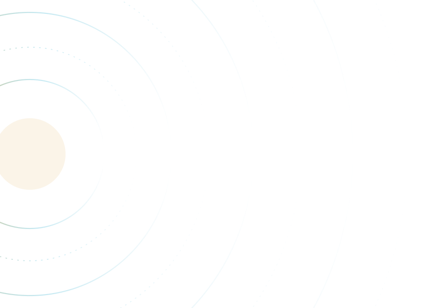

Bahan belajar astronomi dasar
Satu bintang, delapan planet, dan ruang sunyi di antaranya.
Tata surya adalah alamat kita di alam semesta. Semua yang ada di dalamnya, mulai dari planet raksasa sampai butiran debu, terikat oleh gravitasi sebuah bintang berumur sekitar 4,6 miliar tahun. Halaman ini mengajak kamu berkenalan dengan isinya sebelum masuk ke pembahasan yang lebih dalam.
Apa sebenarnya tata surya itu
Tata surya terbentuk ketika sebuah awan raksasa berisi gas dan debu runtuh oleh gravitasinya sendiri sekitar 4,6 miliar tahun lalu. Sebagian besar materi awan itu berkumpul di pusat dan menyala menjadi Matahari, sedangkan sisa piringan di sekelilingnya perlahan menggumpal menjadi planet, satelit, asteroid, dan komet.
Matahari memegang hampir seluruh massa sistem ini, yaitu sekitar 99,8 persen. Karena itulah semua benda lain bergerak mengikuti tarikannya. Delapan planet mengorbit dengan lintasan yang hampir berada pada satu bidang datar, dan urutannya dari yang paling dekat adalah Merkurius, Venus, Bumi, Mars, Jupiter, Saturnus, Uranus, lalu Neptunus.
Ada satu hal yang sering luput, yaitu betapa kosongnya ruang di antara planet. Jarak Bumi ke Matahari sekitar 150 juta kilometer dan dipakai sebagai satuan baku bernama satuan astronomi. Neptunus berada sekitar 30 kali lebih jauh dari itu, sehingga cahaya Matahari yang sampai ke sana jauh lebih redup dibanding yang kita rasakan setiap pagi.
Fakta yang bikin kamu berhenti sebentar
Cahaya Matahari butuh sekitar 8 menit 20 detik untuk sampai ke Bumi. Artinya, Matahari yang kamu lihat siang tadi sebenarnya adalah Matahari beberapa menit yang lalu.
- Cahaya Matahari butuh sekitar 8 menit 20 detik untuk sampai ke Bumi. Artinya, Matahari yang kamu lihat siang tadi sebenarnya adalah Matahari beberapa menit yang lalu.
- Satu hari di Venus lebih panjang daripada satu tahunnya. Venus berputar pada porosnya selama sekitar 243 hari Bumi, sementara satu kali mengelilingi Matahari hanya butuh sekitar 225 hari Bumi.
- Gunung tertinggi di tata surya bukan Everest, melainkan Olympus Mons di Mars dengan ketinggian sekitar 22 kilometer, kira-kira dua setengah kali tinggi Everest.
- Saturnus punya kerapatan rata-rata sekitar 0,69 gram per sentimeter kubik, lebih kecil daripada air. Kalau ada kolam yang cukup besar, planet ini secara teori akan mengapung.
- Jejak kaki astronaut Apollo di Bulan diperkirakan bertahan jutaan tahun, karena Bulan tidak punya atmosfer yang cukup untuk menghasilkan angin dan hujan.
- Uranus berotasi dalam posisi hampir rebah dengan kemiringan sumbu sekitar 98 derajat, sehingga kutubnya menghadap Matahari bergantian selama puluhan tahun.
- Venus adalah planet terpanas di tata surya dengan suhu permukaan sekitar 464 derajat Celsius, meski Merkurius berada lebih dekat ke Matahari. Penyebabnya adalah atmosfer tebal berisi karbon dioksida yang memerangkap panas.
- Pluto sempat dihitung sebagai planet kesembilan sampai Persatuan Astronomi Internasional mendefinisikan ulang istilah planet pada 2006 dan memasukkannya ke kategori planet katai.
- Voyager 1 memasuki ruang antarbintang pada Agustus 2012 dan sampai sekarang menjadi benda buatan manusia yang paling jauh dari Bumi.
- Di ruang angkasa tidak ada bunyi yang bisa kita dengar secara langsung, karena gelombang suara butuh medium seperti udara atau air untuk merambat.
Urutan dari Matahari
Empat planet pertama berbatu dan berukuran kecil. Empat sisanya adalah raksasa gas dan raksasa es yang jauh lebih besar tetapi tidak punya permukaan padat untuk dipijak.
-

Matahari
Bintang katai kuning dengan suhu permukaan sekitar 5.500 derajat Celsius. Intinya jauh lebih panas, sekitar 15 juta derajat Celsius.
Diameter ±1,39 juta km
-

Merkurius
Planet terkecil dan paling dekat dengan Matahari. Tanpa atmosfer berarti, suhunya berayun ekstrem antara siang dan malam.
1 tahun = 88 hari Bumi
-

Venus
Ukurannya mirip Bumi, tetapi atmosfernya padat oleh karbon dioksida sehingga panas terkunci di permukaan.
Suhu permukaan ±464 °C
-

Bumi
Satu-satunya tempat yang sejauh ini diketahui menampung kehidupan, dengan air dalam wujud cair yang stabil di permukaannya.
Jarak ±150 juta km dari Matahari
-

Mars
Permukaannya kemerahan karena mengandung banyak oksida besi. Punya dua satelit kecil bernama Phobos dan Deimos.
1 tahun = 687 hari Bumi
-

Jupiter
Planet terbesar sekaligus pemilik badai raksasa Bintik Merah Besar yang sudah diamati selama berabad-abad.
1 rotasi ±10 jam
-

Saturnus
Sistem cincinnya tersusun dari bongkahan es dan batuan dengan ukuran mulai dari butiran debu sampai sebesar rumah.
1 tahun ±29 tahun Bumi
-

Uranus
Raksasa es yang berotasi nyaris rebah. Warna birunya berasal dari metana di lapisan atas atmosfer.
Kemiringan sumbu ±98°
-

Neptunus
Planet terjauh dan pemilik angin paling kencang di tata surya. Ditemukan lewat perhitungan matematis sebelum benar-benar diamati.
1 tahun ±165 tahun Bumi
Profil tiap planet
Data ukuran, atmosfer, satelit, dan kondisi permukaan dibahas satu per satu di halaman berikutnya.
Buka halaman PlanetFenomena Tata Surya
Penjelasan tentang berbagai fenomena yang terjadi di tata surya, seperti gerhana, hujan meteor dan fenomena lainnya.
Buka halaman Fenomena